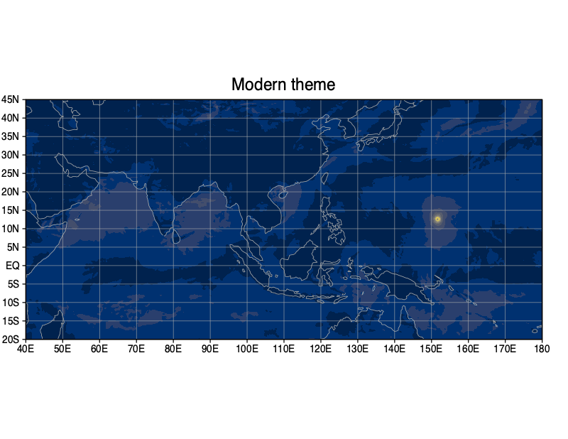
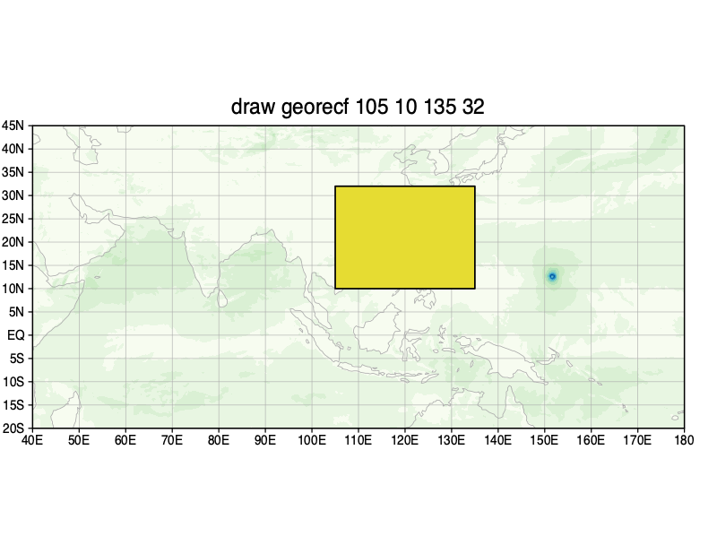
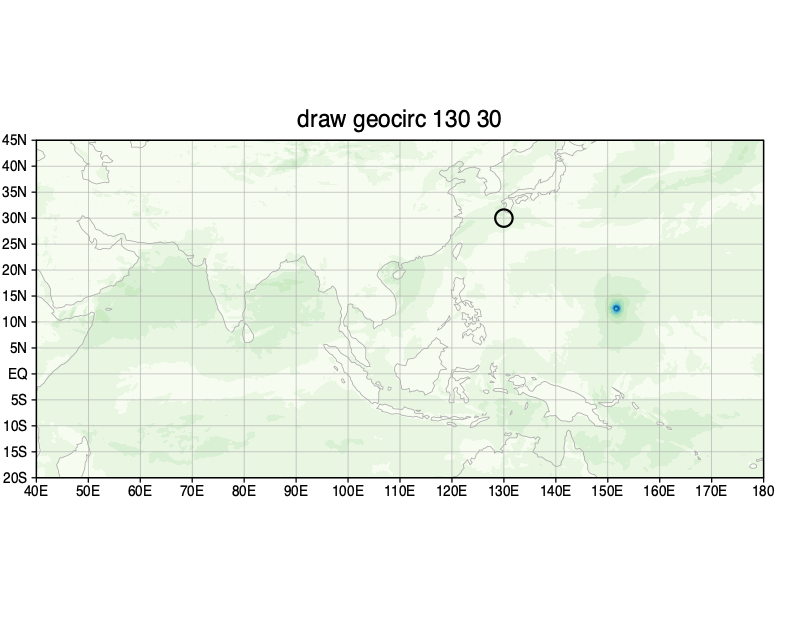

#grads #CAMO
grads-camoで
何ができるか
GrADSらしい短いコードはそのままに、現代的な既定表示と、緯度経度を直接使った地理描画を追加しています。ここでは実際の出力と最小限のコードを並べて紹介します。
01
modernテーマ
緯度経度のアスペクト比、点線格子、地図線、文字と色をまとめて切り替えます。描画コードはこれまでとほぼ同じです。
GrADS script
'sdfopen file.nc'
'set theme modern'
'd mag(ugrd_10mabovegr,vgrd_10mabovegr)'
'draw title Modern theme'
'gxprint U003_modern_default.png'set theme modern の1行で、modernテーマを明示的に適用できます。


02
緯度経度で四角を描く
ページ上のx, y座標ではなく、2地点の緯度経度で領域を指定できます。枠線は georec、塗りつぶしは georecf です。
Outline
'set line 1 1 8'
'draw georec 95 5 145 35'
'draw title draw georec 95 5 145 35'Filled
'set line 7'
'draw georecf 105 10 135 32'
draw georec
draw georecf03
緯度経度で円を描く
地点マーカーとして使う円に加え、半径をkmで指定した距離円も描けます。距離円は地図投影に合わせて変形します。
Point marker
'set line 1 1 8'
'draw geocirc 130 30'
'draw title draw geocirc 130 30'Geodesic radius
'set mproj robinson'
'draw geocirc 145 25 1200 km'

04
緯度経度でベクトルを描く
始点を緯度経度で、成分を東向き・北向きの値で指定します。地図上の任意位置に、意味のある向きと長さで矢印を置けます。
Geographic vector
'set line 1 1 8'
'set arrscl 1.2 20'
'draw geovec 125 25 20 10'
'draw title draw geovec 125 25 20 10'
draw geovec 125 25 20 10今後も追加していきます
grads-camoには、読みやすいベクトル・流線、カラーマップ、再格子化、テキスト出力なども追加されています。短いコードで使える例を順次紹介します。